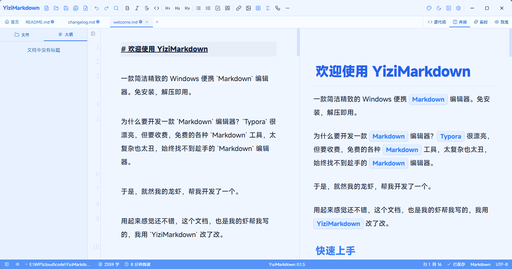

一款简洁精致的跨平台 Markdown 编辑器
Windows 便携版/安装版 · macOS 版 · 支持类 PPT 演示，让你专注于写作本身

基于 CodeMirror 6 构建，支持实时预览、并排编辑、多主题切换，让写作回归纯粹。
源代码、并排、实时预览、纯预览、演示模式，随心切换，找到最适合你的写作与汇报节奏。
笔记一键变全屏幻灯片，纯 Markdown 自动版式，`Ctrl+Alt+P` 即可演示汇报，支持主题换肤与演讲备注。
内置液态玻璃、黑客帝国、落日熔金、赛博朋克等15套精美主题，每套均支持亮暗双模式，支持自定义主题。
像浏览器一样管理多个文件，轻松在文档间切换，工作流不断不乱。
自动提取标题生成文档大纲，点击跳转，长文档也能快速定位。
Windows 便携免安装解压即用，macOS 原生通用二进制（Intel + Apple Silicon），换机也能无缝继续。
内置KaTeX插件，支持LaTeX行内公式与块级公式，满足学术写作需求。
内置Mermaid插件，支持流程图、时序图、甘特图等可视化图表渲染。
8×8网格表格插入表格，点击即可插入对应行列的Markdown表格，无需手动写语法。
从学术严谨到赛博朋克、液态玻璃，每款主题都支持亮暗双模式，反复调校只为最舒适的阅读体验。
键盘流的快乐，一键直达。
功能持续优化，你的建议是最好的迭代方向。
--- 分页，引擎按内容结构自动选版式（封面/内容/图片/引用/代码/图表）Ctrl+Alt+P）--editor-h1/h2/h3 标题配色/ 或 、 自动唤起，继续输入任意字符自动关闭